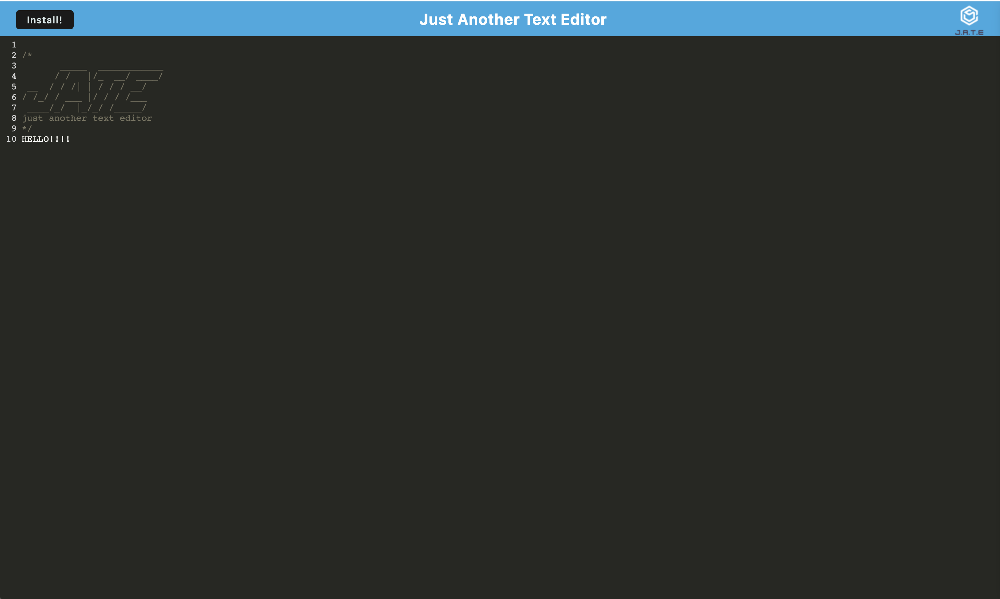

This application serves as a practical demonstration and an opportunity for skill enhancement in the realm of progressive web applications (PWAs). Its primary aim is to provide a deeper insight into the inner workings of the React JavaScript library. Four main concepts are central to this application. First, it involves configuring the webpack.config.js file, incorporating essential Workbox plugins for service worker and manifest files, and implementing CSS and Babel loaders to ensure compatibility with older devices running on legacy code (e.g., ES5). Second, asset caching is employed within the src-sw.js file, enabling offline functionality. Third, the application involves configuring the database, facilitating the addition, updating, and retrieval of data from IndexedDB. Fourth, it incorporates event handlers for the install button, enabling users to install the application into their personal app stack for offline use. While this application relies on a boilerplate code structure, its development has significantly enhanced understanding of libraries and frameworks like React, Angular, and Vue. While there are no immediate plans for further development, this application can serve as a valuable benchmark and boilerplate codebase for the creation of future progressive web applications.

